This assignment implements a two-view calibrated SfM pipeline on the staff-provided image pair:
camera intrinsics estimation, SIFT feature detection, NNDR feature matching, RANSAC pose estimation
via the Essential matrix (8-point), and sparse triangulation with reprojection filtering.
Paths: All outputs below are read from the run directory:
outputs/img1_img2_pose_estimation_SIFT_maxfeat=4000_0.75_NNDR_thresh_4_2026-03-03_16-22-01/
If you re-ran the pipeline and your folder name differs, update the RUN_DIR below in the HTML paths.
Reported Values (Staff-Provided Images)
The assignment requires reporting the random seed, intrinsics matrix K, SIFT feature counts,
NNDR threshold, RANSAC parameters, and any staff-provided parameters modified.
The figures below correspond directly to the required deliverables: SIFT features, NNDR histogram with threshold,
top-5 NNDR matches, correspondences before/after RANSAC, RANSAC convergence, epipolar lines, and final sparse reconstruction.
Step 0 — Original Images (Side-by-Side)
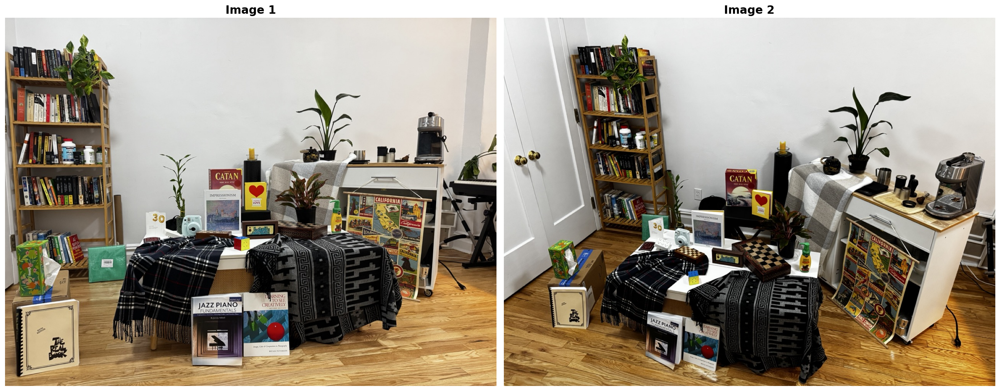
Original staff-provided image pair.
.../step0_original_images.png
Step 2 — SIFT Features (Side-by-Side)
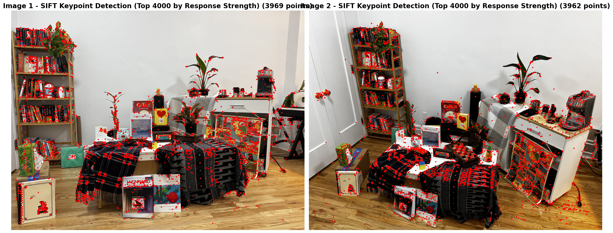
SIFT keypoints detected in both images (max_features=4000).
.../step2_sift_keypoints.png
Step 3 — NNDR Histogram (Threshold Overlaid)
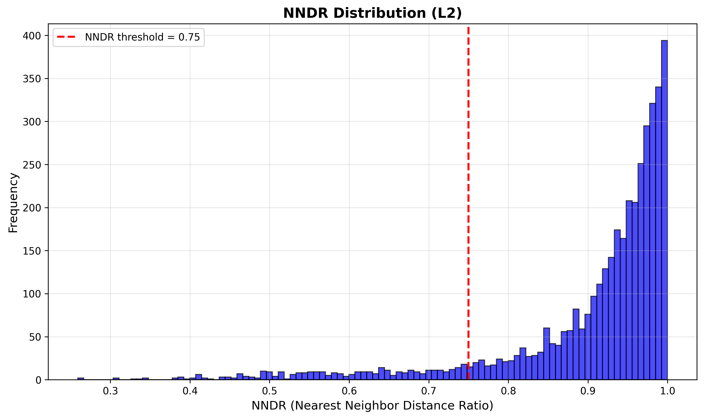
NNDR distribution (L2), threshold = 0.75.
.../step3_feature_matching_nndr_histogram.png
Step 3 — Top 5 Matches Ranked by NNDR
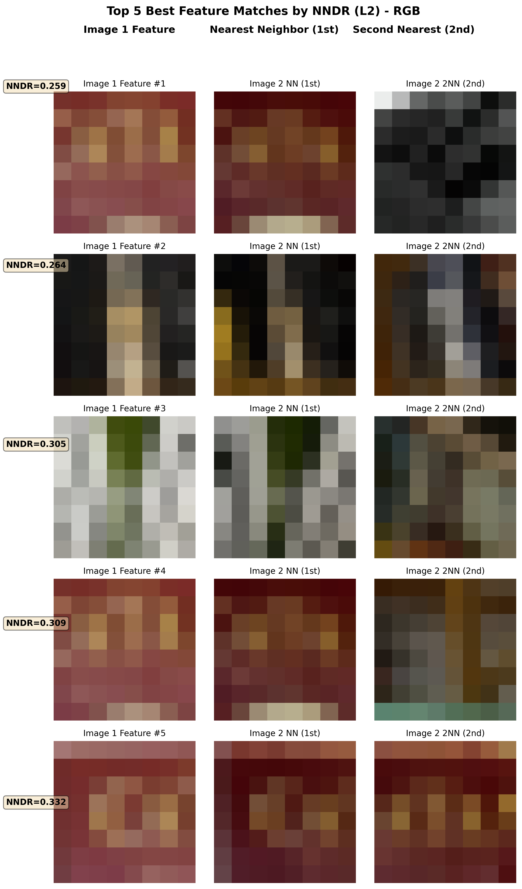
Top 5 matches ranked by NNDR.
.../step3_feature_matching_top5_nndr.png
Step 3 — Correspondences Before RANSAC
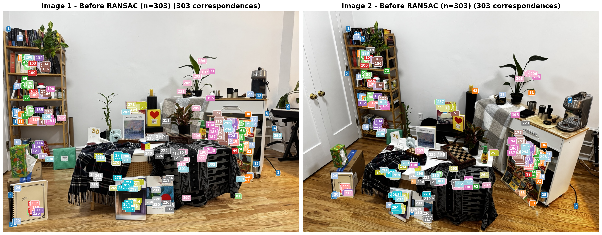
Matches before RANSAC (tentative correspondences).
.../step3_correspondences_before_ransac.png
Feature matching visualization before RANSAC.
.../step3_feature_matching.png
Step 4 — Correspondences After RANSAC (Inliers)
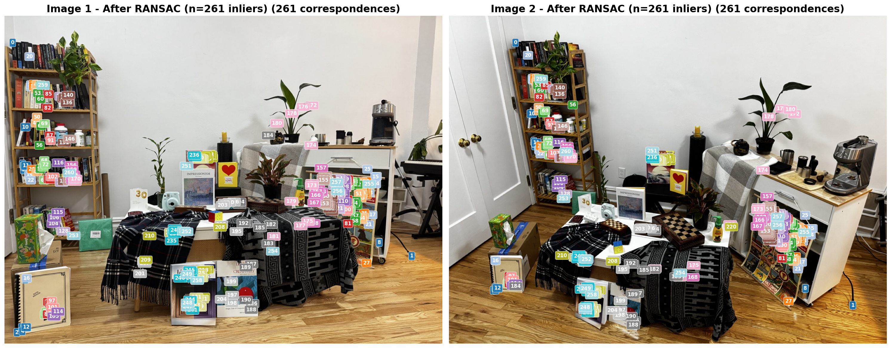
Correspondences after RANSAC (inliers only).
.../step4_correspondences_after_ransac.png
Feature matching visualization after RANSAC (inliers).
.../step4_feature_matching_after_ransac.png
Step 4 — RANSAC Convergence
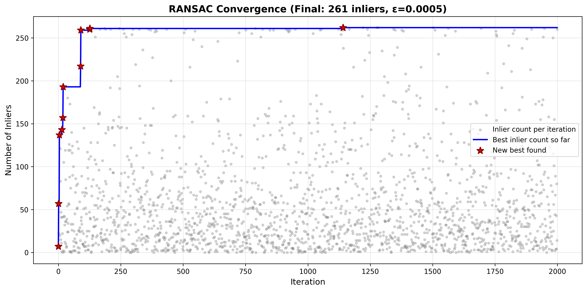
RANSAC inlier count over iterations and best-so-far curve.
.../step4_ransac_convergence.png
Step 4 — Epipolar Lines (Using F = K^{-T} E K^{-1})
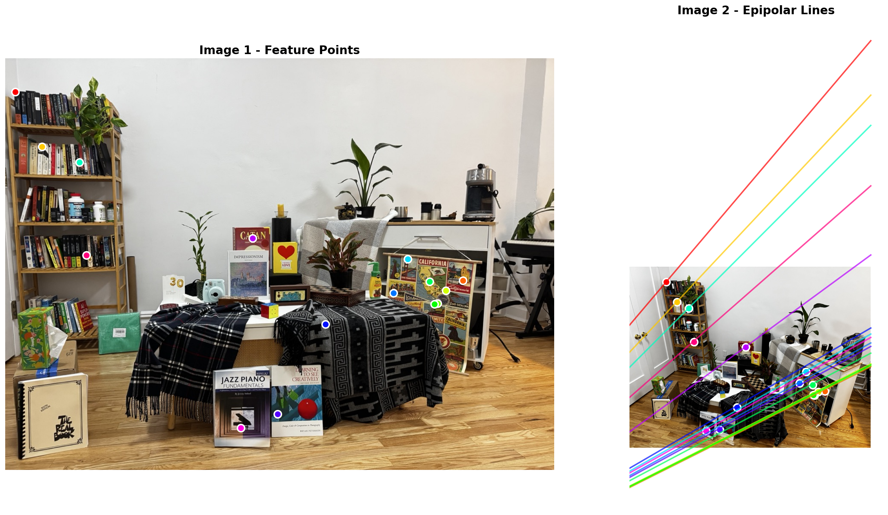
Epipolar geometry visualization on inlier correspondences.
.../step4_epipolar_lines.png
Step 5 — Sparse Reconstruction
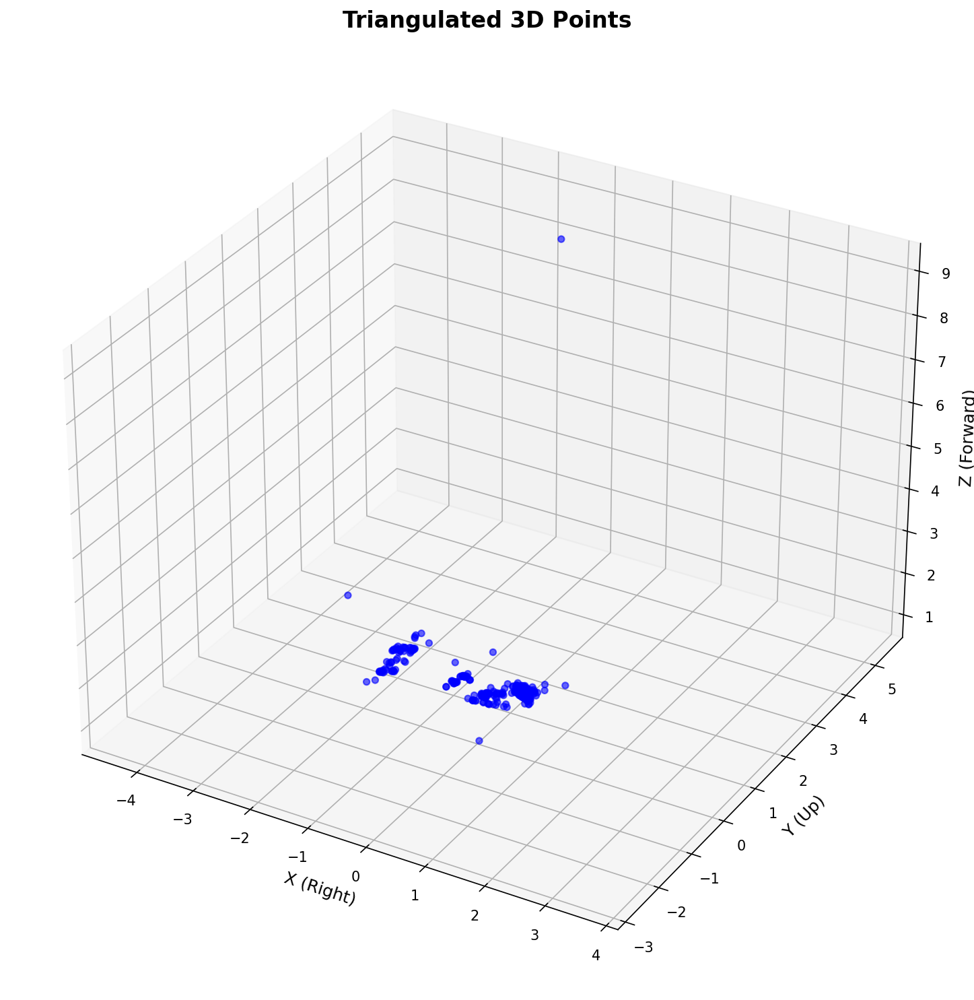
3D point cloud (sparse triangulation).
.../step5_3d_reconstruction.png
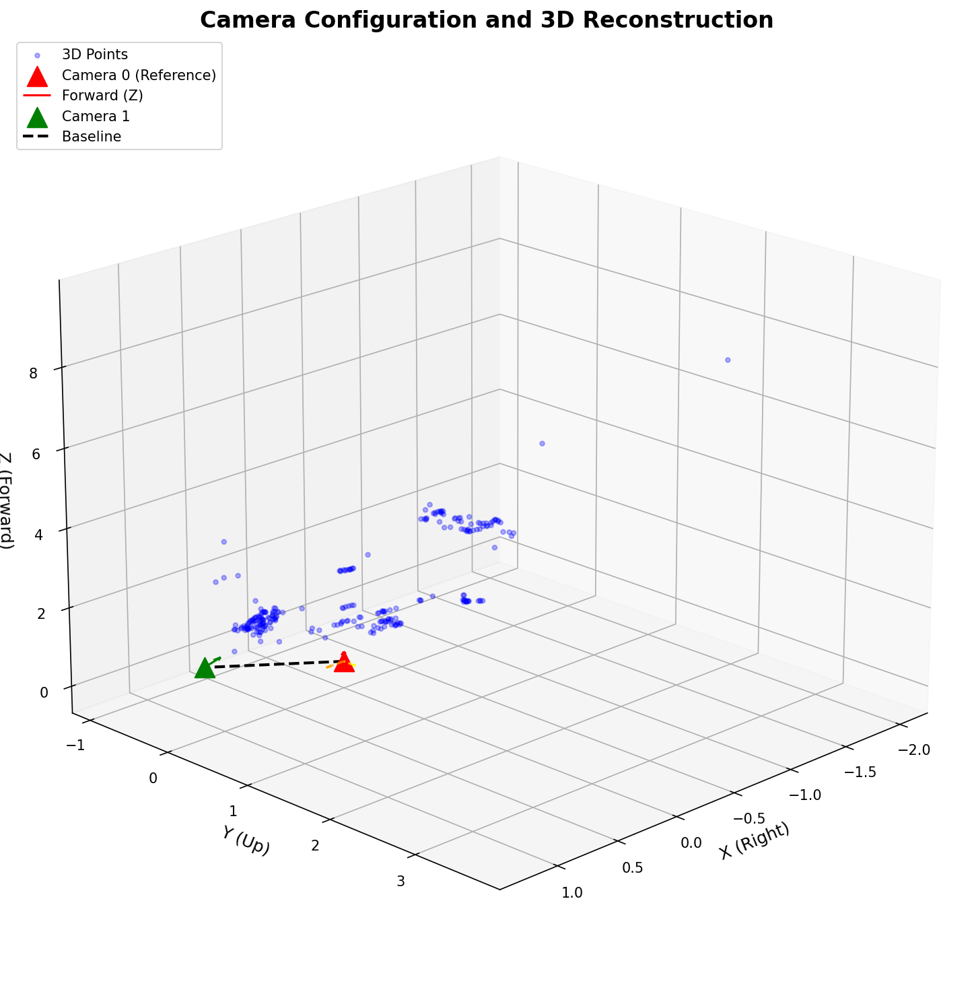
Camera configuration and 3D points.
.../step5_camera_poses.png
Sparse Point Cloud (viser) — Screenshots + Landmarks
Below are 3 screenshots from the viser visualization. Each screenshot includes brief landmark descriptions
based on visible point clusters and the underlying scene structure.
viser Screenshot 1
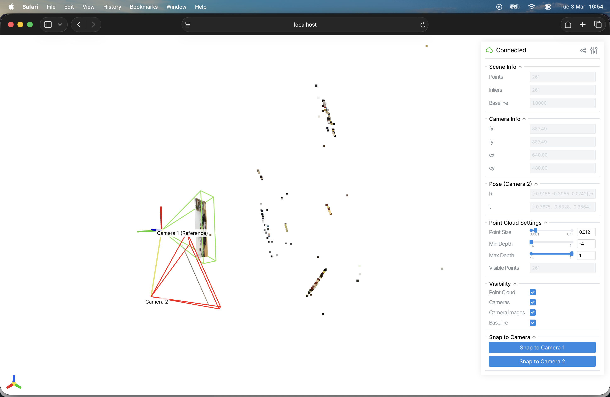
Landmark notes:
The top-most cluster of points corresponds to the the bookshelf.
The middle cluster corresponds to the high-texture regions on the table + objects.
The bottom most scattered points correspond to poster hung on the drawer which is located toward the right side of the scene.
.../viser_1.png
viser Screenshot 2
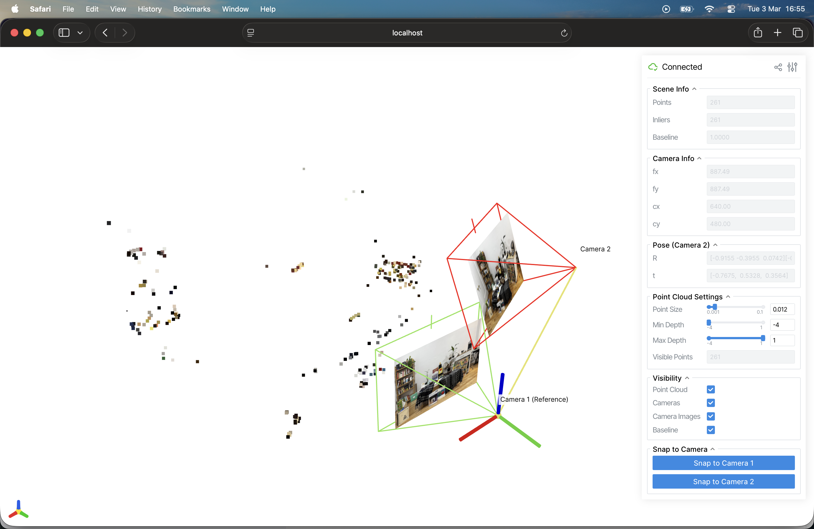
Landmark notes:
Left cluster aligns with the bookshelf points and edges.
The middle cluster corresponds to the objects in the very middle of the scene.
The points towards the upper right side correspond to the drawer chest in the image.
.../viser_2.png
viser Screenshot 3
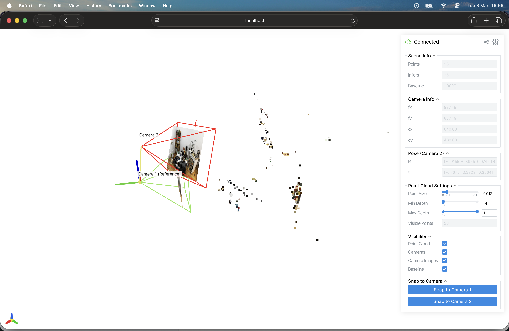
Landmark notes:
Top most cluster represents the bookshelf / tall vertical edges.
Centermost points towards the left side indicate the objects in the foreground.
The right most cluster is from the stack of drawers with the poster hung from it.